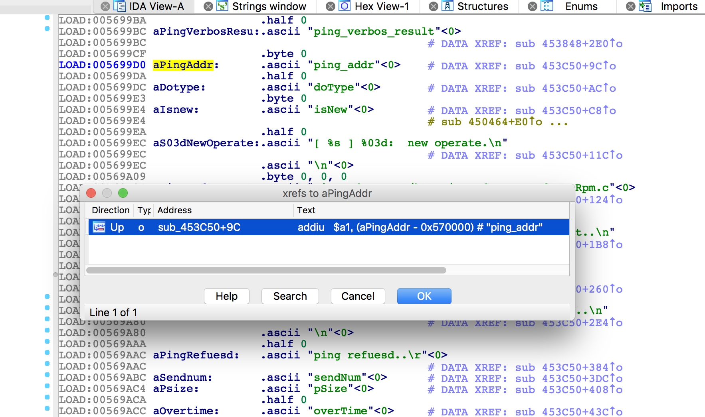

漏洞分析
漏洞存在于/usr/bin/httpd文件中，溢出参数为ping_addr
交叉引用定位到sub_453C50函数

httpGetEnv获取ping_addr传入的ip地址，并将结果传给s6寄存器
ip地址作为参数传入ipAddrDispose函数

我们来看ipAddrDispose函数，首先初始化栈空间为0
然后未对ip地址做任何限制就直接调用strcpy拷贝到了栈上，从而造成了缓冲区溢出

利用
拿到shell之后(root:sohoadmin)，发现与外部无法正常通信
iptables -L
默认都drop掉了，于是修改规则
1 | iptables -P FORWARD ACCEPT |
传一个gdbserver到设备
1 | tftp -l gdbserver -r gdbserver.mipsbe -g 192.168.0.2 |
checksec发现NX,PIE,Canary都没开，ASLR开到2
我们attach到最后一个httpd进程
溢出长度为168
httpd的动态链接库如下：
我们选择在libuClibc-0.9.30.so中寻找gadget，找到如下gadget
a0参数从栈上取出，然后跳到s0执行，又因为s0,s1两个寄存器的值我们可控，故构造如下栈布局
实现RCE，如在tmp目录下创建文件a